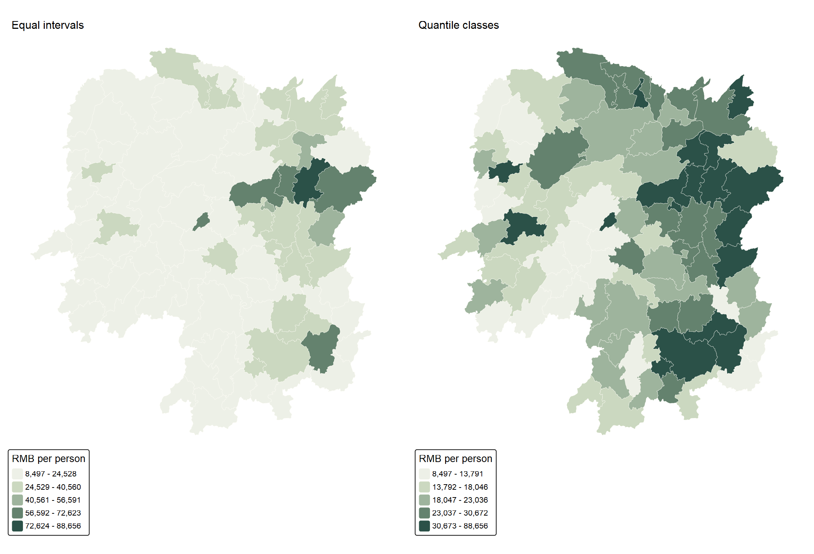
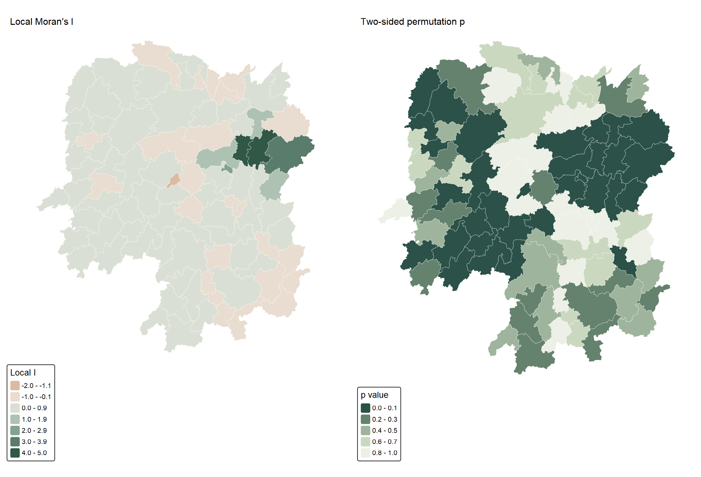
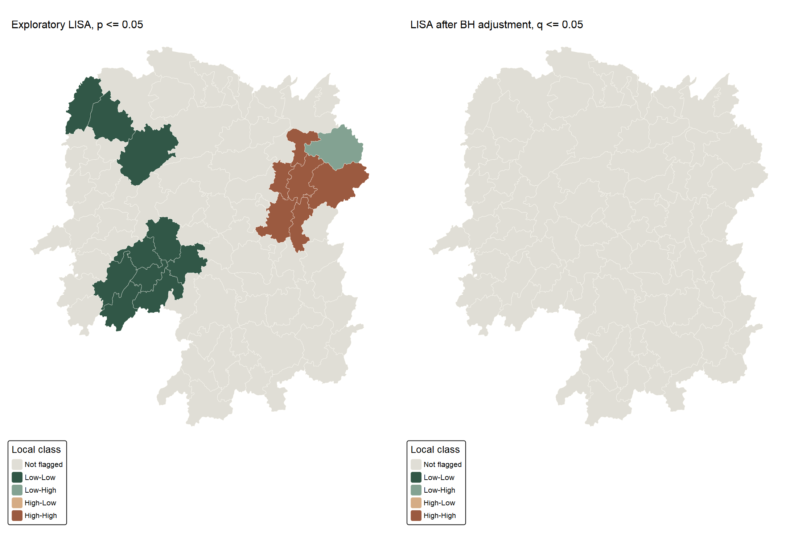
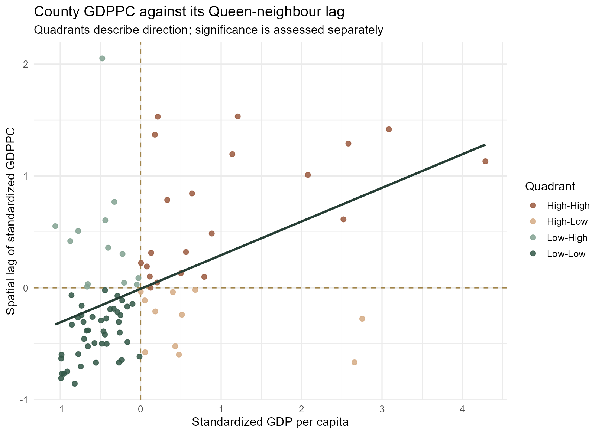
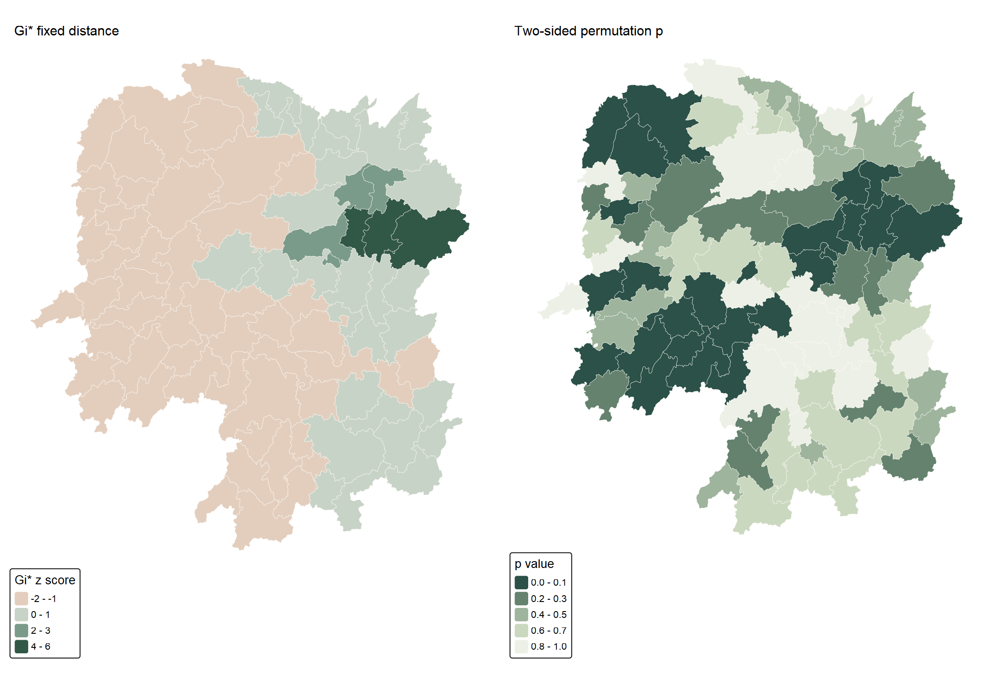
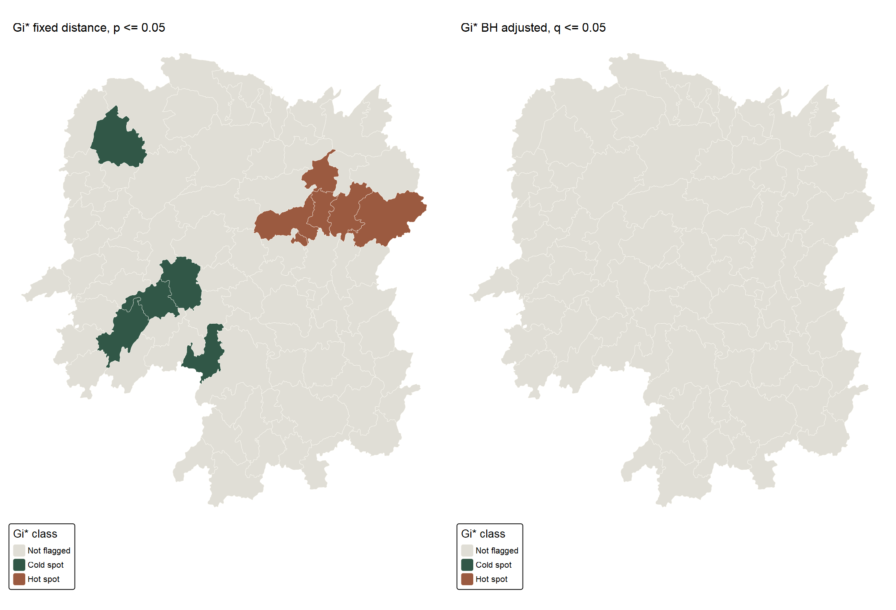
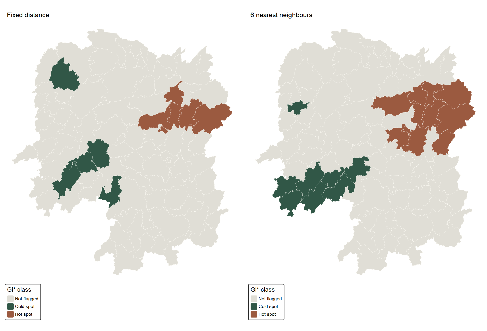

Show R code
nb <- sfdep::st_contiguity(sf::st_geometry(hunan_m), queen = TRUE)
wt <- sfdep::st_weights(nb, style = "W")
sfdep::global_moran(hunan_m$GDPPC, nb, wt)Locating and testing economic clusters in Hunan’s counties
yufanyou2025
September 26, 2026
Exercise 5A found positive global association in the 2012 GDP per capita of the 88 Hunan counties in the supplied teaching extract. That result does not say where the relationship is strongest. Following Chapter 10 of the course workbook and the class screenshots, I calculate local Moran’s I and Getis–Ord Gi* with sfdep, map their permutation results, and test whether the apparent locations survive a change in spatial weights and a multiple-testing adjustment.
These maps are exploratory evidence about a 2012 spatial pattern. They do not measure whether development programmes succeeded or whether one county’s GDP causes another’s.
The shared preparation script joins the supplied shapefile and Hunan_2012.csv one-to-one on County, checks all 88 geometries and GDPPC values, and transforms the polygons from EPSG:4326 to EPSG:32650 for distance calculations in metres. The exact raw-file checksums and reproduction instructions are in the data note. The page executes the complete 5B R script in a clean session.

The side-by-side classification is a useful reminder that a dark cluster on a map partly depends on how values are binned. The local tests below use the unclassified numeric GDPPC values, not these colours.
The screenshots build a neighbour list with st_contiguity() and row-standardised weights with st_weights(style = "W"). My analysis confirms 448 directed Queen links, no zero-neighbour county, and row sums of one. sfdep::global_moran() returns 0.301, matching the spdep estimate in 5A. This cross-check matters because different data ordering or weights would make the local comparison unreliable.
Local Moran asks whether each county’s deviation from the provincial mean aligns with its neighbours’ deviations. I use 999 fixed-seed permutations and the two-sided simulated p-value for each county. A High-High or Low-Low label requires both the appropriate scatterplot quadrant and p <= 0.05; a High-Low or Low-High label describes a local contrast. A quadrant by itself is not a significance result.


| Decision rule | LISA class | Counties |
|---|---|---|
| Unadjusted two-sided permutation p <= 0.05 | Not flagged | 71 |
| Unadjusted two-sided permutation p <= 0.05 | Low-Low | 10 |
| Unadjusted two-sided permutation p <= 0.05 | Low-High | 1 |
| Unadjusted two-sided permutation p <= 0.05 | High-High | 6 |
| Benjamini-Hochberg q <= 0.05 | Not flagged | 88 |
At the unadjusted 5% threshold, 17 counties are flagged: 6 High-High, 10 Low-Low, and 1 Low-High. The high-high set includes Liuyang, Wangcheng, Zhuzhou and Changsha; several low-low counties occur in the west and southwest. After Benjamini–Hochberg adjustment across all 88 local tests, no county remains flagged at q <= 0.05. Thus the coloured unadjusted map is a candidate-finding device, not a verified list of 17 separate discoveries.

The county-level results table includes the statistic, analytical and simulated p-values, adjusted q-values and quadrant, allowing a reader to inspect a county without relying on its colour alone.
Gi* tests whether high or low values in a neighbourhood as a whole are unusually concentrated. It differs from local Moran’s I: the focal county is included in the Gi* neighbourhood, and the output describes a hot or cold concentration rather than a high/low quadrant pairing. Here I choose the minimum distance that connects the county network, about 60.8 km, then include the focal county. This threshold is calculated on EPSG:32650 metre coordinates. Its neighbourhood sizes range from 2 to 7, including self. I also try six nearest neighbours plus self as a sensitivity check.
threshold_m <- sfdep::critical_threshold(sf::st_geometry(hunan_m))
fixed_nb <- sfdep::include_self(sfdep::st_dist_band(
sf::st_geometry(hunan_m), upper = threshold_m + 1))
fixed_wt <- sfdep::st_weights(fixed_nb, style = "W")
set.seed(62654)
gi <- sfdep::local_gstar_perm(hunan_m$GDPPC, fixed_nb, fixed_wt,
alternative = "two.sided", nsim = 999)
gi$p_bh <- p.adjust(gi$p_sim, method = "BH")

| Decision rule | Gi* class | Counties |
|---|---|---|
| Fixed distance, unadjusted p <= 0.05 | Not flagged | 77 |
| Fixed distance, unadjusted p <= 0.05 | Cold spot | 5 |
| Fixed distance, unadjusted p <= 0.05 | Hot spot | 6 |
| Fixed distance, BH q <= 0.05 | Not flagged | 88 |
| 6 nearest neighbours, unadjusted p <= 0.05 | Not flagged | 69 |
| 6 nearest neighbours, unadjusted p <= 0.05 | Cold spot | 8 |
| 6 nearest neighbours, unadjusted p <= 0.05 | Hot spot | 11 |
With the fixed-distance rule, 6 counties are exploratory hot spots and 5 are cold spots at unadjusted p <= 0.05. They include Liuyang and Wangcheng on the high side and Longhui and Suining on the low side. Again, none remains flagged after BH adjustment. The full Gi* table reports both raw and adjusted values.

The six-nearest-neighbour rule flags 19 counties, compared with 11 under fixed distance. 18 county classifications differ. The alternatives are not interchangeable: a fixed radius gives sparse areas fewer neighbours, while k-nearest neighbours stretches further across sparse terrain. The kNN graph can have disconnected components even though each county gets six neighbours; it is presented as a sensitivity comparison rather than as a claim of a single correct economic neighbourhood.
| Distance/weight check | Value |
|---|---|
| Fixed threshold metres | 60799.9 |
| Fixed threshold kilometres | 60.8 |
| Fixed neighbours including self: minimum | 2.0 |
| Fixed neighbours including self: maximum | 7.0 |
| kNN neighbours including self | 7.0 |
| Different Gi* class in kNN | 18.0 |
Global significance does not automatically translate into strong evidence for individual counties. Here the global Moran test is clear, but the 88 county-level LISA and Gi* tests lose their individual flags after adjustment. I also learned to separate a county’s High-High quadrant from a statistically flagged High-High cluster, and to check how many conclusions move when the neighbourhood definition changes. The maps identify hypotheses worth investigating with fuller socioeconomic data; they cannot establish economic spillovers, welfare, or policy effects from GDPPC alone.
st_contiguity(), local_moran() and local_gstar_perm().Hunan_2012.csv and dictionary. The archive does not identify the original statistical publisher or boundary vintage; exact checksums and reproduction instructions are retained.